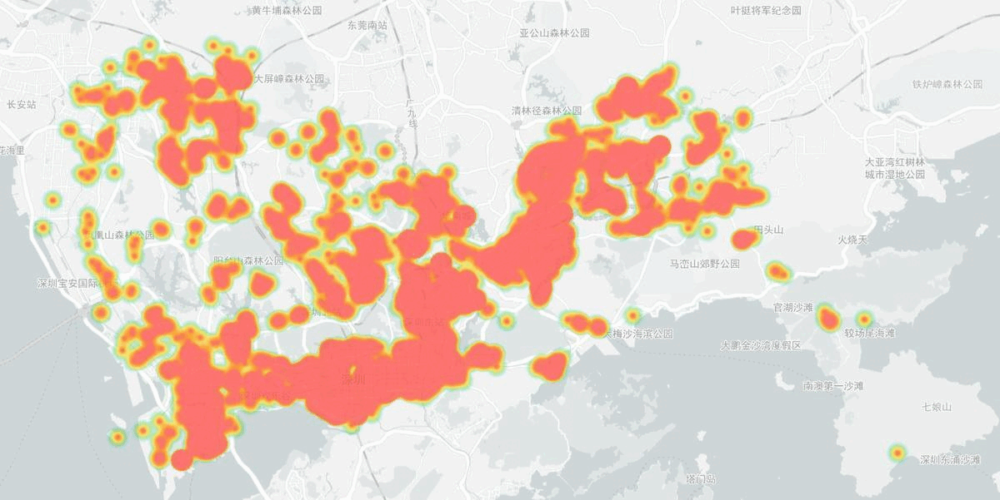

IEEE MLSP 2023 Data Challenge - Volunteer Retention and Future Collaboration Prediction
Introduction
In recent years, there has been a rise in online crowdsourcing platforms that facilitate volunteering efforts, enabling individuals to collaborate on collective goals. Such efforts can play an instrumental role in responding to community needs, especially during times of crisis, such as earthquakes and pandemics. To optimize these efforts, it is crucial to model volunteers’ task participation and collaboration behavior. In this challenge, we aim to learn such a model from data using machine learning and signal processing techniques. We present a volunteer participation dataset with two tasks.
Volunteer Dataset
The dataset is collected from a mobile crowdsourcing app called “Anti-Pandemic Pioneers” (later renamed to “Shenzhen Pioneers”) used for organizing volunteers during the COVID-19 pandemics in Shenzhen, China. It contains records of each volunteer participating in a group activity (task). Each record includes features such as volunteer ID, task ID, timestamp, task location, and etc. Task names and descriptions will also be provided.
Heapmap of volunteer activities from 2020 to 2021 in Shenzhen
Task 1: Retention Prediction
Predict the number of future participations of volunteers based on their participation history. Groundtruth labels will be provided as a list of “Volunteer ID - # of future participation” pairs. This task focuses on modeling volunteer retention, an important research area in social and management science. Improving volunteer retention enhances the overall volunteering experience and encourages sustained engagement.
Task 2: Future Collaboration Prediction
Predict whether two volunteers will collaborate in future tasks. The particiaption records of volunteers as well as the ground truth edge list of their participation graph will be provided. Future collaboration prediction has diverse applications, such as understanding volunteer group behaviors and developing social recommendation tools for volunteers.
Competition Details
See Task Description for detailed information about the dataset and evaluation criteria.
Participants can choose to participate in either one or both tasks.
The datasets for both tasks have identical structure but sampled from distinct districts, ensuring no overlap.
The evaluation metrics are Mean Squared Error for Task 1 and Area Under Precision-Recall Curves (AUPR) for Task 2.
The retention dataset is split into a train set (23,808 volunteers) and a test set (22,369 volunteers). The test set is further split into private test set (2/3 for final evaluation) and public test set (1/3 for getting feedbacks during the competition).
Participants can access all datasets but only labels for the train sets.
Code Submission
Submissions can be made for the public test on Kaggle, and immediate scores (MSE and AUPR) will be provided.
Task 1: Volunteer Retention Prediction
Paper Submission
Papers should not be longer than 6 pages, including all text, figures and references, according to the Paper Submission Guidelines. All the accepted and presented papers will be published in and indexed by IEEE Xplore.
Citation
A subset of this dataset was first published with the following paper:
Zhang, A., Zhang, K., Li, W., Wang, Y., Li, Y. and Zhang, L., 2022. Self-organised volunteer efforts in response to the COVID-19 pandemic. Humanities and Social Sciences Communications, 9(1).
Please NOTE. that the intellectual property (IP) is not transferred to the challenge organizers, i.e., if code is shared/submitted, the participants remain the owners of their code (when the code is made publicly available, an appropriate license should be added).
Privacy Notice. The volunteer activity data used in this challenge were passively collected from the mobile platform with personal identification information removed. No investigations on humans were involved. During the preparation of this challenge, the organizers did not have access to any identification information associated with the collected data. We are committed to adhering to strict privacy and ethical guidelines during the entire competition process.
Acknowledgement. We thank the Shenzhen Pioneers APP operation team for providing the volunteer data.
Important Date:
July 19, 2023: Deadline for Submitting Results
July 20, 2023: Paper Submission
July 25, 2023: Challenge Paper Acceptance Notification
July 29, 2023: Camera-Ready Challenge Papers Deadline